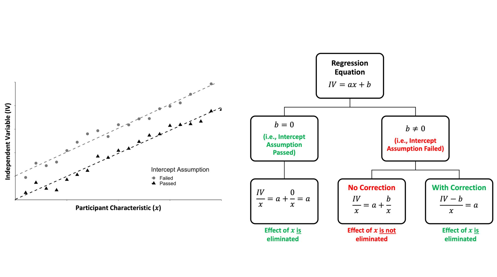
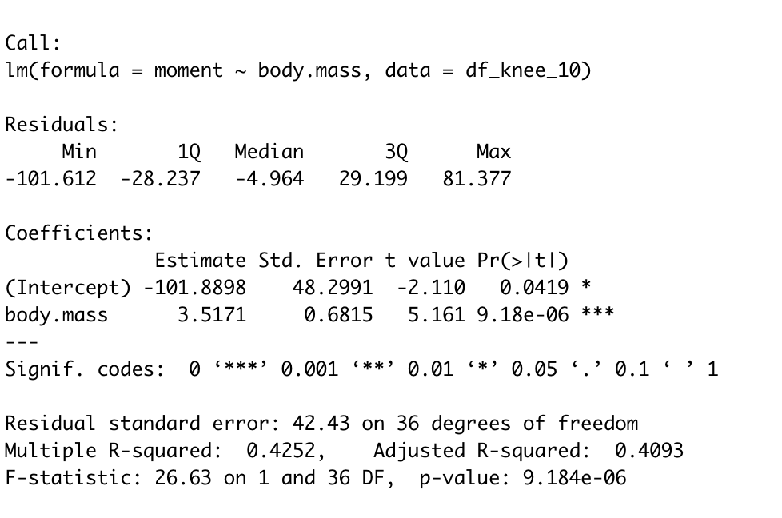
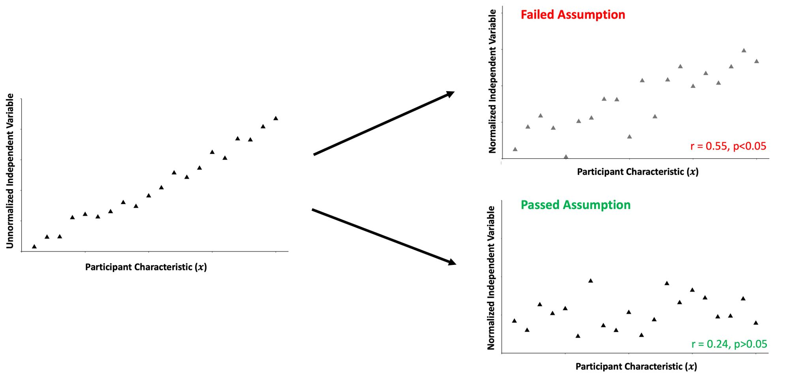

Six Reasons to Be Cautious When Computing Ratios to Normalize (Biomechanical) Data
EDIT: My paper on the topic has been published in the Journal of Applied Biomechanics for those who are interested!
 Steven M Hirsch
Steven M Hirsch
Intuitively, it makes sense to compute ratios to scale data when making comparisons between different people. For example, let's say you wanted to compare the hip extensor net-joint moment (NJM) between people during a squat. It's common to divide NJM by participants' body mass to "level the playing field," so to speak. This approach seems to make sense as heavier people should generate larger NJMs, and thus we should consider people's mass when making inferences about who is producing a larger NJM. We use the same intuition in the weight room as well. Almost everyone is probably familiar with referring to and judging their squat (or other lift) as a multiple of their body mass.
Computing a ratio to normalize data is an effortless way to account for the variance between people. However, statisticians have long warned researchers about the potential pitfalls of computing ratios to facilitate these objectives. Furthermore, there are other conceptual considerations when deciding whether ratio normalizing data is appropriate for subsequent analysis.
In this article, I outline six reasons to be cautious when computing ratios. Although I'll use biomechanics examples in this text, it's relevant to anyone in biology, physiology, psychology, nutrition, or any other branch of science dealing with data that they want to scale when making comparisons between people. Failure to consider these six things can result in misleading descriptions of and inferences from your data.
If you want a short version, I tweeted a thread about this that you can check out:
Ever normalize your biomechanical data (e.g., NJM), or other independent variables (e.g., 1RM lifts), by computing a ratio using some characteristic of the participant (e.g., body mass)? If so, here are four things to consider to ensure you aren't misrepresenting your data:
— Steven Hirsch (@_stevenhirsch) October 4, 2021
Otherwise, here's a slightly more in-depth look at the six things to consider, along with some R code:
Statistical Reasons
1. The ratio of two distributions is likely not normal
A ratio distribution \(Z\) is constructed from the ratio of two random variables, \(Y\) and \(X\), having two other known distributions, such that \(Z = \frac{Y}{X} \). If \(X\) and \(Y\) are normally distributed with a mean of zero and are independent, then \(Z\) will be Cauchy distributed. However, If the ratios are correlated or don't have a mean of zero (as is usually the case when we are trying to normalize data), the relationship becomes much more complicated (see this Wikipedia entry for more detail and Oliveira et al., 2015). Unless the variables you are using to normalize the data possess specific properties, the ratio of two distributions will be heavy-tailed and have no moments (Marsaglia, 1965; Hinkely, 1969). In other words, the ratio won't be normally distributed.
Statisticians have done some simulation and empirical work to assess the necessary constraints of the numerator and denominator for the ratio to produce a reasonable approximation of a normal distribution (e.g., Hayya et al., 1975; Díaz-Francés and Rubio, 2013). Roughly, if the coefficient of variation is less than 0.19 for the numerator (\(Y\)) and less than 0.1 for the denominator (\(X\)), and the absolute value of the correlation between the two variables is less than or equal to 0.5, we will likely have a reasonable approximation of a normal distribution (note: this is a somewhat crude estimate, and you should check out the papers listed previously to get a better sense of the constraints you should impose on your data if you want to assume it's normally distributed).
Let's relate this now to traditional tests of normality. In R, the most common ways of doing this are using a Shapiro-Wilks Test:
x <- rnorm(1000)
shapiro.test(x)or a Kolmogorov-Smirnov Test:
ks.test(x, "pnorm", mean(x), sd(x))
Although we can get a quick answer using these tests regarding whether we think our data violates the assumption of normality, it's essential to consider that we are only testing the probability of observing our data if the underlying distribution wasn't normal (i.e., we're basing our interpretations on the p-value of these tests). Therefore, since these tests only rule out the null hypothesis, and hypothesis testing can be quite fickle, we must rely on the statistical properties mentioned in the previous paragraph to determine whether a normal distribution is possible for our ratio data. It's still not a bad idea by any means to use these tests to check your data, but consider that even if \(p>0.05,\) this doesn't mean the ratio data is necessarily normally distributed.
2. The intercept assumption
This assumption is somewhat sneaky and best taught visually. Consider the figure and flow chart below:

We can represent the relationship between an independent variable of interest (e.g., NJM) and a participant characteristic that we might use to normalize NJM (e.g., body mass) using linear regression. Suppose the intercept term (denoted as \(b \) in the classic equation of a line) of this linear regression is zero and thus passes through the origin. Dividing the independent variable (the NJM) by the participant characteristic (body mass) will eliminate the effect of that variable. Great, this is what we intended!
However, suppose the intercept term doesn't pass through the origin. Then, a correction factor would need to be applied (i.e., subtracting the NJM first by the intercept term) before computing the ratio (i.e., dividing by body mass). Otherwise, we haven't eliminated the effect of the participant characteristic with our ratio normalized data.
The simplest way to test this assumption is to evaluate the p-value and 95% confidence intervals of the intercept term of the linear regression equation. For example, in R, testing this assumption using a traditional linear regression might look like:
model <- lm(moment ~ body.mass, data=df)
summary(model)This might give you an output like this:

In this case, we see the p-value of the (Intercept) term is statistically significant, and thus we would conclude the intercept does not pass through the origin. A correction factor would, in theory, need to be applied to the ratio. If it is not significant, then we assume that the intercept passes through the origin. Curran-Everett (2013) provides an alternative method of assessing this assumption using model II regression, but ultimately this method answers the same question.
(Also, please note that your regular assumptions for constructing and interpreting the coefficients of a linear regression still apply here!)
3. The correlation assumption
The correlation assumption, much like the intercept assumption, is also somewhat easier to visualize:

When computing a ratio, we assume no correlation between the ratio and the participants' characteristics. Furthermore, we assume the ratio doesn't lead to spurious correlations with other variables. Using the vocabulary of regression, if there is still a significant proportion of the variance in the ratio normalized independent variable (e.g., NJM) explained by participant characteristics, we aren't accomplishing our objectives of accounting for the variability between people. Finally, we are also assuming there aren't any nonlinear relationships between the ratio and participant characteristics, as this would suggest the ratio isn't consistent across all values of the participant characteristic.
Researchers and practitioners can evaluate this assumption by computing a correlation coefficient between the normalized data and participant characteristics. The simplest way to do this in R is:
cor.test(x,y, method="pearson")Or whichever other correlation method you wish to use. Note that only the Pearson r has a direct interpretation to the coefficient of determination when we're only assessing two variables. This may or may not be important to you depending on whether you care about understanding the variance (or lack thereof) explained by a variable.
Assessing whether there are any nonlinear relationships between the ratio and participant characteristics can first be assessed visually. If there appears to be a nonlinear relationship between variables, then the ratio can be log-transformed, and the correlation assessed again. If the log-transformed ratio is now not correlated with participant characteristics, then the ratio wouldn't be appropriate to use as it isn't consistent across all values of the participant characteristic. Figure 2 of Atinkson et al.'s (2009) paper provides a good example of this.
4. The statistical difference assumption
When we compute a ratio and compare the differences between groups, we assume that the inferences made are similar to an adjusted linear model (the "gold standard" approach). For example, suppose the inferences from a linear model comparing the NJM between two groups that adjusts for participants' body mass gives a different answer than comparing the NJM/kg between these two groups using a t-test. Assuming that the linear regression assumptions were satisfied, we have an inconsistency that needs resolving (and we're better off going with the linear regression).
If you are interested in adding covariates to a model, please check out this link. It's not overly difficult, but to explain it completely would detract from the purpose of this article.
Conceptual Reasons
5. Consider the resulting units of the ratio
This consideration is easy to forget, but ultimately, the ratio units must cancel out to yield some dimensionless number or result in another SI unit.
For example, consider the running example of normalizing an NJM by body mass. The units for an NJM are newton-meters (\(N\cdot m\)), which in its SI base units is \( kg \cdot m^2 \cdot s^{-2} \). If we divide this by someone's body mass (kg), the units are now \(m^2 \cdot s^{-2} \), which are the units for Specific energy. Converting the units in this way is a problem since computing Specific energy is almost certainly not the researcher or practitioner intended when dividing NJM by body mass.
If we instead got creative and divided by body weight (with SI units for the Newton of \( kg \cdot m \cdot s^{-2} \)), then the units would become just meters. Getting a final answer in meters is also likely not super helpful as it's probably not what we intended to compare between groups. However, perhaps we can use other participant characteristics, such as their height or leg length and multiply it by their body weight. Then, when you divide NJM by this product of body weight and height or leg length, the units will cancel out entirely (some researchers normalize their data this way, but the methods used between studies are inconsistent).
Although multiplying body weight and height or leg length would appear to be a better way of normalizing NJM data at first glance, we've actually now introduced another potential issue in that the product of two normally distributed variables, much like the ratio, is also not necessarily normally distributed (similar to the ratios, there are only certain instances where a normal distribution is a reasonable approximation). Therefore, we again need to ensure that this ratio (and the potential product we're introducing in the denominator) is still statistically sound. Secondly, this is still a difficult concept to interpret practically (e.g., what does it mean to produce 1.5 newton-meters of torque per unit of body mass times height?). Thus, depending on the context, this ratio might create more confusion than it alleviates.
6. Is a ratio appropriate for your research question?
Depending on the research question, differences in body size and shape may, or may not, be relevant to the analysis. For example, suppose researchers wanted to compare NJM data between sexes. It may be that the strength of the association between the interaction of biological sex, body mass, and their leg length with NJM is greater than these individual variables combined. How does one account for this by computing a ratio? The flexibility of linear regression to model interaction effects makes it better suited to account for this variation between groups.
Additionally, researchers have shown that unnormalized NJM-AP better discriminates between patients with mild to severe OA than normalizing NJM-AP by body mass (Robbins et al., 2011). In other words, depending on the research question or application, the absolute loading is more relevant than the relative loading.
Furthermore, body mass, height, and leg length may act as constraints that nonlinearly influence coordination and control (Davids et al., 2003). Thus, the influence of anthropometrics on NJM magnitudes is not necessarily “noise” to be attenuated via normalization (or something that can be accounted for using linear regression) since they are likely part of the biological signal itself.
However, what if one wants to normalize their data to not account for the variance between people but to function as a proxy for tissue loading? For example, people's leg lengths are strongly correlated to the cross-sectional area of the ACL (Hosseinzadeh and Kiapour, 2020). Thus, the strain on the ACL may be better approximated with a knee abduction NJM normalized by a person's leg length. Although it conceptually makes sense to normalize data for this purpose, it's still vital to ensure that the other assumptions and conceptual considerations are accounted for before computing ratios.
Summary and final thoughts
In addition to ensuring the numerator and denominator are constrained appropriately, so the resulting ratio is still reasonably approximated with a normal distribution, it is also vital that researchers and practitioners verify the other statistical assumptions before computing ratios. Furthermore, it's crucial not to lose sight of the fact that the resulting units of the ratio must still make sense and be interpretable (something unitless is probably ideal here) and that the reason for computing a ratio aligns with your research question. Regression-based alternatives are usually better suited for accounting for differences between people due to their increased flexibility and decreased reliance on the assumptions required to compute ratios. Still, the decision of whether and how to account for differences in participant characteristics depends on the research question posed.